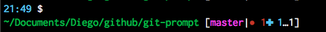

Introducing git prompt
Some time ago I found a really good git prompt for bash, I think I grab it from here.
The installation of the bash git prompt was easy. It was needed to copy the .gitprompt.sh and gitstatus.py in the home directory and source the gitprompt.sh in the profile file. It works just good and it is well documented.
What I like from the prompt is that the status shows besides the name of the branch the following information of a git repository.
- ✔: repository clean
- ●n: there are n staged files
- ✖n: there are n files with merge conflicts
- ✚n: there are n changed but unstaged files
- …n: there are n untracked files
Porting to Haskell
As I mentioned before the previous program works just fine, but I decided to port the program written in Python in Haskell in order to practice the language and as the same time to understand what the Python script does. It is a good way to learn new stuff and I did learn some things while writing the program.
The name of the project is git-prompt and the source code can be found here.
The result of the porting is shown in the following picture: 
Git-prompt shows the current branch and its status. Actually the .gitprompt.sh does more than that, it shows the current time in hours and minutes and set the colors for the git-prompt. If you want to customize something in the colors or the style of the prompt, make the changes in the file .gitprompt.sh.
Installation of git-prompt
The first step is to compile the git-prompt. Clone the git repository and run the following command to compile it.
$ stack buildCopy the compiled file git-prompt-exe into your home directory. Copy as well the file .gitprompt.sh from the repository into your home directory. You can do that running the following commands inside the git-prompt root directory.
$ cp .stack-work/install/x86_64-osx/lts-7.12/8.0.1/bin/git-prompt-exe ~/
$ cp .gitprompt.sh ~/Performance of git-prompt
After porting the git prompt to Haskell, I measured how fast was the Haskell version compared with the original version written in Python. I made the measurements just to be sure I was not losing performance. Here is where I got a surprise because the Haskell version is faster. Here are the results:
$ time ~/git-prompt-exe
master
.
0
0
3
4
0
real 0m0.045s
user 0m0.017s
sys 0m0.028s$ time ~/gitstatus.py
master
.
0
0
3
4
0
real 0m0.077s
user 0m0.036s
sys 0m0.038sAfter trying several times in different scenarios, I always got that the version written in Haskell was faster than the version in Python.
Conclusion
After doing the porting, I realize that the code in Haskell is elegant. I hope it is not just something subjective. You can see the code and make your opinion. I think the data types make the code more readable. Git-prompt is faster than the original version, I guess it is because it is compiled. Although I used several data types and a library for the git commands, the Haskell compiler made a good job during compilation. Git-prompt is just a port to Haskell from the original version. I hope to introduce in the future new features or if you have a feature in mind do not bother to put a pull requests.